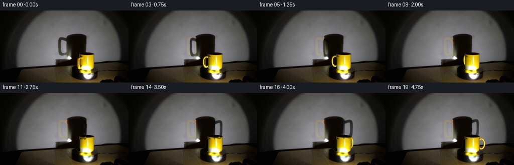
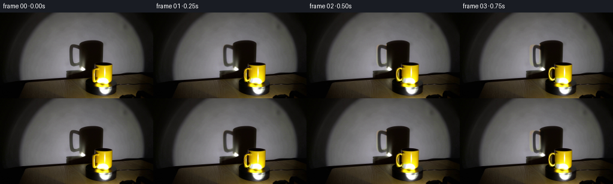
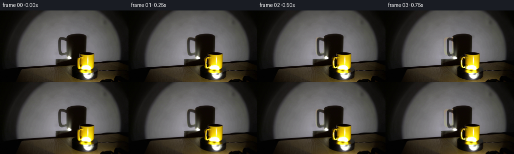
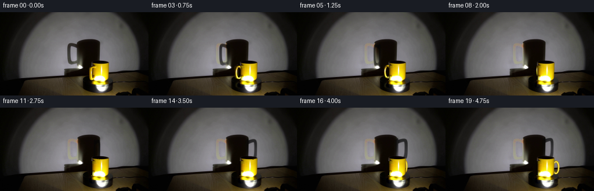
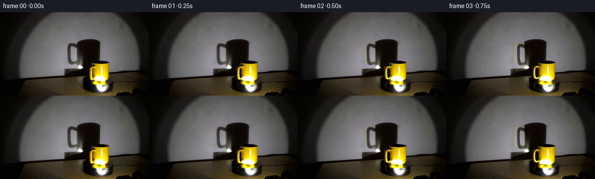

CODING AGENTS AS PIXEL WORLD MODELS
traex/GPT-6.1-Sol · 0076
点击播放 · 原生 RGB 像素
逐轮保存的候选
回放视频、检查图与代码变化。
每份候选均可单独播放。实际图片检查记录在下方工具轨迹中。
候选 01播放与检查图
点击播放 · 原生 RGB 像素


展开代码变化
--- 上一保存版本
+++ 本次保存版本
@@ -0,0 +1,223 @@
+from pathlib import Path
+import numpy as np
+from PIL import Image, ImageDraw
+import cv2
+from scipy.ndimage import gaussian_filter
+import artifact_io
+
+ROOT=Path(__file__).resolve().parent
+W,H=256,144
+S=3
+im=np.array(Image.open(ROOT/'first_frame.png').convert('RGB')).astype(np.float32)
+YY,XX=np.mgrid[:H,:W]
+
+
+def polygon(points, scale=1):
+ mask=Image.new('L',(W*scale,H*scale))
+ ImageDraw.Draw(mask).polygon([(round(x*scale),round(y*scale)) for x,y in points],fill=255)
+ return np.asarray(mask).astype(np.float32)/255
+
+# Estimate the illuminated wall only from nearby unoccluded wall pixels.
+def wall_surface():
+ x=(XX-145)/50; y=(YY-72)/35
+ terms=np.stack([x**i*y**j for i in range(4) for j in range(4-i)],axis=-1)
+ select=(XX>97)&(XX<201)&(YY>42)&(YY<98)
+ select &= ~((XX>111)&(XX<175)&(YY>45))
+ select &= ~((XX>154)&(YY>81))
+ result=[]
+ for c in range(3):
+ coef=np.linalg.lstsq(terms[select],im[:,:,c][select],rcond=None)[0]
+ result.append(terms@coef)
+ return np.stack(result,axis=-1)
+wall=wall_surface()
+# The original handle shadow is sampled, including its soft photographic edge.
+shadow_region=polygon([(114,52),(131,51),(138,55),(139,86),(132,92),(120,93),(112,86),(112,58)])
+shadow_region=gaussian_filter(shadow_region,.65)
+shadow_region*=np.clip((140-XX)/7,0,1)
+shadow_alpha=np.clip(1-(im.mean(2)-5)/np.maximum(wall.mean(2)-5,1),0,.83)*shadow_region
+shadow_alpha*=np.clip((wall.mean(2)-im.mean(2)-7)/14,0,1)
+shadow_alpha=shadow_alpha.astype(np.float32)
+# Retain the cylinder's shadow. Undo only the initial handle contribution.
+clean_wall=(im-5*shadow_alpha[:,:,None])/np.maximum(1-shadow_alpha[:,:,None],.14)
+
+# Remove the old handle, using the cylinder's own yellow glazing to restore the
+# small occluded strip. The unchanged mug, lip, light, and support stay photographic.
+body_base=im.copy()
+old_area=polygon([(156,92),(163,92),(167,95),(166,111),(164,117),(159,119),(153,117),(151,111),(151,98)])
+old_area=gaussian_filter(old_area,.6)
+for y in range(92,120):
+ for x in range(150,168):
+ m=old_area[y,x]
+ if m<=0: continue
+ # Slightly tapered ceramic cylinder, left edge and rounded bottom.
+ left=158.0+max(0,y-110)*.045
+ bottom=118.6-2.0*((x-173)/15)**2
+ if x<left or y>bottom:
+ value=np.array([10.,5.,1.])
+ if x>156 and y>=117:
+ value=im[y,x].copy()
+ else:
+ if y<111:
+ target=im[y,167].copy()
+ k=np.clip((x-157.5)/10.0,0,1)**.48
+ value=target*k
+ value[2]=max(1,value[2])
+ else:
+ # The broad light reflection is fixed on the rotationally
+ # symmetric ceramic body, not on the moving handle.
+ target=im[y,168].copy()
+ k=np.clip((x-157.7)/9.7,0,1)**.54
+ value=target*k
+ value[2]*=np.clip((x-158)/5,0,1)
+ edge=np.clip((x-left+.4),0,1)
+ value=value*edge+np.array([10,5,1])*(1-edge)
+ body_base[y,x]=im[y,x]*(1-m)+value*m
+body_change=body_base-im
+
+# An elliptical ceramic handle: a swept, round tube in a vertical radial plane.
+phi0=np.deg2rad(-140)
+N=80; K=16
+us=np.arange(N)*2*np.pi/N
+vs=np.arange(K)*2*np.pi/K
+u,v=np.meshgrid(us,vs,indexing='ij')
+r=18.0+6.5*np.cos(u)
+z=17.0+10.2*np.sin(u)
+# The outward normal in the ellipse plane.
+nr=np.cos(u)/6.5; nz=np.sin(u)/10.2
+norm=np.sqrt(nr*nr+nz*nz); nr/=norm;nz/=norm
+tube=1.72
+radial=r+tube*np.cos(v)*nr
+height=z+tube*np.cos(v)*nz
+side=tube*np.sin(v)
+verts_local=np.stack([radial,height,side],axis=-1).reshape(-1,3)
+norm_local=np.stack([np.cos(v)*nr,np.cos(v)*nz,np.sin(v)],axis=-1).reshape(-1,3)
+faces=[]
+for i in range(N):
+ for j in range(K):
+ a=i*K+j;b=((i+1)%N)*K+j;c=((i+1)%N)*K+(j+1)%K;d=i*K+(j+1)%K
+ faces.extend([(a,b,c),(a,c,d)])
+faces=np.asarray(faces)
+
+
+def world(phi):
+ r,h,b=verts_local.T
+ x=r*np.cos(phi)-b*np.sin(phi)
+ depth=r*np.sin(phi)+b*np.cos(phi)
+ nr,nh,nb=norm_local.T
+ normals=np.stack([nr*np.cos(phi)-nb*np.sin(phi),nr*np.sin(phi)+nb*np.cos(phi),nh],axis=1)
+ return np.stack([x,depth,h],axis=1),normals
+
+
+def project(p):
+ return np.stack([173+p[:,0],118.8-.98*p[:,2]-.20*p[:,1]],axis=1)
+
+p0,n0=world(phi0);uv0=project(p0)
+light=np.array([.30,-.87,-.20]);light/=np.linalg.norm(light)
+view=np.array([0,-.98,.20]);view/=np.linalg.norm(view)
+
+def brightness(norms):
+ diffuse=np.maximum(norms@light,0)
+ half=(light+view);half/=np.linalg.norm(half)
+ spec=np.maximum(norms@half,0)**28
+ return .35+.72*diffuse, spec
+old_b,old_spec=brightness(n0)
+
+# Original photographic pigment is transferred over the tube. Previously
+# concealed back surfaces use the same yellow material with analytic lighting.
+def raster_handle(phi):
+ p,n=world(phi);screen=project(p)*S
+ highh,highw=H*S,W*S
+ rgba=np.zeros((highh,highw,4),np.float32)
+ depthbuf=np.full((highh,highw),1.e9,np.float32)
+ b,spec=brightness(n)
+ dep=p[:,1]-.204*p[:,2]
+ for f in faces:
+ a=screen[f]
+ xmin=max(0,int(np.floor(a[:,0].min())));xmax=min(highw-1,int(np.ceil(a[:,0].max())))
+ ymin=max(0,int(np.floor(a[:,1].min())));ymax=min(highh-1,int(np.ceil(a[:,1].max())))
+ if xmin>xmax or ymin>ymax:continue
+ x,y=np.meshgrid(np.arange(xmin,xmax+1)+.5,np.arange(ymin,ymax+1)+.5)
+ den=(a[1,1]-a[2,1])*(a[0,0]-a[2,0])+(a[2,0]-a[1,0])*(a[0,1]-a[2,1])
+ if abs(den)<1e-6:continue
+ w0=((a[1,1]-a[2,1])*(x-a[2,0])+(a[2,0]-a[1,0])*(y-a[2,1]))/den
+ w1=((a[2,1]-a[0,1])*(x-a[2,0])+(a[0,0]-a[2,0])*(y-a[2,1]))/den
+ w2=1-w0-w1
+ weights=np.stack([w0,w1,w2],axis=-1)
+ zdepth=weights@dep[f]
+ obj=weights@p[f]
+ # Analytic occlusion by the cylindrical mug, along the camera rays.
+ radius=14.9-.012*np.maximum(0,32-obj[:,:,2])
+ inside_x=np.abs(obj[:,:,0])<radius
+ cylinder_front=-np.sqrt(np.maximum(0,radius**2-obj[:,:,0]**2))
+ cylinder_h=(118.8-y/S-.20*cylinder_front)/.98
+ blocked=inside_x&(cylinder_h>0)&(cylinder_h<32)&(obj[:,:,1]>cylinder_front+.18)
+ valid=(w0>=-1e-5)&(w1>=-1e-5)&(w2>=-1e-5)&(~blocked)
+ current=depthbuf[ymin:ymax+1,xmin:xmax+1]
+ valid &= zdepth<current
+ if not valid.any():continue
+ tex=weights@uv0[f]
+ tx=tex[:,:,0].astype(np.float32);ty=tex[:,:,1].astype(np.float32)
+ photo=cv2.remap(im,tx,ty,cv2.INTER_LINEAR,borderMode=cv2.BORDER_REPLICATE)
+ initial_facing=(weights@n0[f])@view
+ old_world=weights@p0[f]
+ old_cyl=-np.sqrt(np.maximum(0,14.9**2-old_world[:,:,0]**2))
+ old_visible=(np.abs(old_world[:,:,0])>14.9)|(old_world[:,:,1]<old_cyl+.1)
+ safe=(initial_facing>.05)&old_visible&(photo[:,:,0]>65)&(photo[:,:,1]>35)&(photo[:,:,2]<photo[:,:,1]*.83)
+ bb=weights@b[f];ob=weights@old_b[f]
+ ss=weights@spec[f];os=weights@old_spec[f]
+ analytic=np.stack([222*bb,179*bb,3+bb*3],axis=-1)+ss[:,:,None]*np.array([110,128,164])
+ adjusted=photo*np.clip(bb/np.maximum(ob,.15),.58,1.7)[:,:,None]
+ adjusted+=(ss-os)[:,:,None]*np.array([80,95,125])
+ color=np.where(safe[:,:,None],adjusted,analytic)
+ region=rgba[ymin:ymax+1,xmin:xmax+1]
+ region[:,:,:3][valid]=np.clip(color[valid],0,255)
+ region[:,:,3][valid]=1
+ current[valid]=zdepth[valid]
+ # Supersampled premultiplied colors produce subpixel edge coverage.
+ reduced=cv2.resize(rgba,(W,H),interpolation=cv2.INTER_AREA)
+ return reduced[:,:,:3], reduced[:,:,3]
+
+old_color,old_mask=raster_handle(phi0)
+# A small, transported photographic correction makes the first movement
+# continuous with the supplied exposure rather than replacing the photograph.
+initial_render=body_base*(1-old_mask[:,:,None])+old_color
+residual=(im-initial_render)*old_area[:,:,None]
+
+
+def render(index):
+ t=index/4
+ theta=np.deg2rad(44)*t
+ phi=phi0-theta
+ q=np.cos(theta)
+ # The light is fixed at the front right. Its view of the handle rotates
+ # differently from the camera view, hence the changing enlarged silhouette.
+ sy=1+.035*np.sin(theta)
+ mat=np.array([[q,0,153*(1-q)],[0,sy,72*(1-sy)+2.8*np.sin(theta)]],np.float32)
+ sa=cv2.warpAffine(shadow_alpha,mat,(W,H),flags=cv2.INTER_LINEAR,borderMode=cv2.BORDER_CONSTANT)
+ frame=clean_wall*(1-sa[:,:,None])+5*sa[:,:,None]
+ frame+=body_change
+ color,mask=raster_handle(phi)
+ frame=frame*(1-mask[:,:,None])+color
+ # Transport only the fine initial surface detail; visibility is governed
+ # by the cylinder and the moving handle, not by a crossfade of the scene.
+ qcam=np.cos(phi)/np.cos(phi0)
+ shear=.20*(np.sin(phi0)-np.sin(phi))/np.cos(phi0)
+ affine=np.array([[qcam,0,173*(1-qcam)],[shear,1,-173*shear]],np.float32)
+ corr=cv2.warpAffine(residual,affine,(W,H),flags=cv2.INTER_LINEAR,borderMode=cv2.BORDER_CONSTANT)
+ weight=np.exp(-(theta/.6)**2)
+ frame+=corr*weight
+ return np.uint8(np.clip(np.round(frame),0,255))
+
+
+def main():
+ frames=[im.astype(np.uint8)]
+ for i in range(1,20):
+ frames.append(render(i))
+ frames=np.stack(frames)
+ assert np.array_equal(frames[0],np.array(Image.open(ROOT/'first_frame.png').convert('RGB')))
+ artifact_io.save(frames,ROOT)
+ (ROOT/'.tmp').mkdir(exist_ok=True)
+ np.save(ROOT/'.tmp'/'rgb_video.npy',frames)
+ print('Saved',frames.shape,frames.dtype)
+
+if __name__=='__main__':main()
候选 02播放与检查图
点击播放 · 原生 RGB 像素

展开代码变化
--- 上一保存版本
+++ 本次保存版本
@@ -57,18 +57,22 @@
if x>156 and y>=117:
value=im[y,x].copy()
else:
- if y<111:
- target=im[y,167].copy()
- k=np.clip((x-157.5)/10.0,0,1)**.48
- value=target*k
- value[2]=max(1,value[2])
+ # Fit the hidden glazing to the strip visible through the loop.
+ # Its fixed highlight grows broader near the rounded bottom.
+ if y<109:
+ value=im[y,min(187,max(159,x))].copy()
+ if x<160:
+ value=im[y,160]*np.clip((x-157.5)/2.5,0,1)**.7
+ if y<97:
+ value=im[y,167]*np.clip((x-157.6)/9.4,0,1)**.5
else:
- # The broad light reflection is fixed on the rotationally
- # symmetric ceramic body, not on the moving handle.
- target=im[y,168].copy()
- k=np.clip((x-157.7)/9.7,0,1)**.54
- value=target*k
- value[2]*=np.clip((x-158)/5,0,1)
+ white=np.clip((y-109)/4,0,1)
+ sx=min(187,x+int(2*white))
+ value=im[y,max(160,sx)].copy()
+ if x<162:
+ yellow=im[min(y,108),max(160,x)].copy()
+ value=yellow*(1-white)+np.array([253.,251.,110.])*white
+ value*=np.clip((x-157.7)/3.3,0,1)**.6
edge=np.clip((x-left+.4),0,1)
value=value*edge+np.array([10,5,1])*(1-edge)
body_base[y,x]=im[y,x]*(1-m)+value*m
@@ -80,12 +84,12 @@
us=np.arange(N)*2*np.pi/N
vs=np.arange(K)*2*np.pi/K
u,v=np.meshgrid(us,vs,indexing='ij')
-r=18.0+6.5*np.cos(u)
-z=17.0+10.2*np.sin(u)
+r=17.4+4.9*np.cos(u)
+z=15.2+10.4*np.sin(u)
# The outward normal in the ellipse plane.
-nr=np.cos(u)/6.5; nz=np.sin(u)/10.2
+nr=np.cos(u)/4.9; nz=np.sin(u)/10.4
norm=np.sqrt(nr*nr+nz*nz); nr/=norm;nz/=norm
-tube=1.72
+tube=1.65
radial=r+tube*np.cos(v)*nr
height=z+tube*np.cos(v)*nz
side=tube*np.sin(v)
候选 03播放与检查图
点击播放 · 原生 RGB 像素


展开代码变化
--- 上一保存版本
+++ 本次保存版本
@@ -187,21 +187,50 @@
initial_render=body_base*(1-old_mask[:,:,None])+old_color
residual=(im-initial_render)*old_area[:,:,None]
+def reflected_glaze(color,mask):
+ # A weak, vertically compressed reflection on the polished dark support.
+ reflection_map=np.array([[1,0,0],[0,-.46,118.9*1.46]],np.float32)
+ c=cv2.warpAffine(color,reflection_map,(W,H),flags=cv2.INTER_LINEAR)
+ m=cv2.warpAffine(mask,reflection_map,(W,H),flags=cv2.INTER_LINEAR)
+ c=gaussian_filter(c,(.65,.65,0));m=gaussian_filter(m,.65)
+ visible=np.clip((YY-119.0)/2,0,1)*np.clip((137-YY)/9,0,1)
+ # Leave the stationary spotlight and its saturated light pool untouched.
+ visible*=np.clip((190-im.mean(2))/140,0,1)
+ return .12*visible[:,:,None]*(c-im*m[:,:,None])
+
+initial_reflection=reflected_glaze(old_color,old_mask)
+mug_silhouette=polygon([(158,88),(159,85),(166,84),(179,84),(186,86),
+ (188,88),(188,104),(186,115),(183,118),
+ (165,119),(159,117),(157,113)])
+mug_silhouette=gaussian_filter(mug_silhouette,.42)
+platform_grain=im-gaussian_filter(im,(1.1,1.1,0))
+platform_region=np.clip((1-((XX-170)/49)**2-((YY-106)/7.2)**2)*5,0,1)
+platform_region*=np.clip((30-im.max(2))/13,0,1)*(1-mug_silhouette)
+
def render(index):
t=index/4
theta=np.deg2rad(44)*t
phi=phi0-theta
q=np.cos(theta)
+ # Clockwise rotation of the original turntable's faint surface texture.
+ px=XX-170;py=(YY-106)/.147
+ tx=(170+np.cos(theta)*px+np.sin(theta)*py).astype(np.float32)
+ ty=(106+.147*(-np.sin(theta)*px+np.cos(theta)*py)).astype(np.float32)
+ grain=cv2.remap(platform_grain,tx,ty,cv2.INTER_LINEAR,borderMode=cv2.BORDER_REPLICATE)
+ platform_delta=np.clip(grain-platform_grain,-2,2)*platform_region[:,:,None]*.6
# The light is fixed at the front right. Its view of the handle rotates
# differently from the camera view, hence the changing enlarged silhouette.
sy=1+.035*np.sin(theta)
mat=np.array([[q,0,153*(1-q)],[0,sy,72*(1-sy)+2.8*np.sin(theta)]],np.float32)
sa=cv2.warpAffine(shadow_alpha,mat,(W,H),flags=cv2.INTER_LINEAR,borderMode=cv2.BORDER_CONSTANT)
+ sa*=1-mug_silhouette
frame=clean_wall*(1-sa[:,:,None])+5*sa[:,:,None]
+ frame+=platform_delta
frame+=body_change
color,mask=raster_handle(phi)
frame=frame*(1-mask[:,:,None])+color
+ frame+=reflected_glaze(color,mask)-initial_reflection
# Transport only the fine initial surface detail; visibility is governed
# by the cylinder and the moving handle, not by a crossfade of the scene.
qcam=np.cos(phi)/np.cos(phi0)
可观测工具轨迹
实际执行的命令与返回图片。
命令 1exit 0
/bin/bash -lc 'ls -la && cat prompt.txt && cat GENERATION_RULES.md'
命令 2exit 0
/bin/bash -lc "cat artifact_io.py && python - <<'PY'
from PIL import Image
import numpy as np
im=np.asarray(Image.open('first_frame.png').convert('RGB'))
print(im.shape)
# ascii luminance + colors at 2x2 average
im=np.asarray(Image.fromarray(im).resize((128,72)))
for row in im:
s=''
for r,g,b in row:
if r>110 and g>65 and b<.65*g and r>1.1*g: c='Y'
elif max(r,g,b)-min(r,g,b)>35: c='o'
else:c=' .,:;irsXA253hMHGS#9B&@'[min(int((.2126*r+.7152*g+.0722*b)/255*21),21)]
s+=c
print(s)
PY"命令 3exit 0
/bin/bash -lc "python - <<'PY'
from PIL import Image
import numpy as np
from scipy import ndimage as ndi
im=np.array(Image.open('first_frame.png'))
r,g,b=im.astype(float).transpose(2,0,1)
mask=(r>110)&(g>65)&(b<g*.65)&(r>g*1.1)
l,n=ndi.label(mask)
for i in range(1,n+1):
y,x=np.where(l==i)
if len(y)>4:print('yellow comp',len(y),'bounds',x.min(),y.min(),x.max(),y.max(),'mean',im[l==i].mean(0))
# sampled colors grid
for y in range(40,144,4):
print(y, ' '.join(f'{x}:{tuple(im[y,x])}' for x in range(96,222,8)))
PY"命令 4exit 0
/bin/bash -lc "python - <<'PY'
from PIL import Image
import numpy as np
im=np.array(Image.open('first_frame.png'))
for box in [(148,80,193,128),(110,44,177,102),(136,117,204,143)]:
print('BOX',box)
x0,y0,x1,y1=box
print(' '+''.join(str(x//10%10) for x in range(x0,x1)))
print(' '+''.join(str(x%10) for x in range(x0,x1)))
for y in range(y0,y1):
s=''
for r,g,b in im[y,x0:x1].astype(int):
if min(r,g,b)>240:c='W'
elif r>100 and r>1.15*g and g>1.6*b:
c= 'y' if r<180 else 'Y'
elif r>160 and g>145 and b<130:c='L'
elif r>60 and r>1.18*g and g>1.6*b:c='t'
elif max(r,g,b)<20:c=' '
elif max(r,g,b)<40:c='.'
elif max(r,g,b)<80:c=':'
elif max(r,g,b)<120:c='i'
elif max(r,g,b)<160:c='a'
elif max(r,g,b)<200:c='A'
elif max(r,g,b)<240:c='H'
else:c='w'
s+=c
print(str(y).rjust(3)+' '+s)
PY"命令 5exit 0
/bin/bash -lc "python - <<'PY'
import numpy as np
from PIL import Image
im=np.array(Image.open('first_frame.png'))
# per row pixel RGB detailed initial handle
for y in [89,92,94,96,98,100,104,108,112,114,116,118,120,123]:
print('\\ny',y)
for x in range(149,170):print(x,tuple(im[y,x]),end='; ')
print()
PY"命令 6exit 0
/bin/bash -lc "python - <<'PY' import importlib.util for m in ['numpy','scipy','PIL','cv2']: print(m,bool(importlib.util.find_spec(m))) PY"
命令 7exit 0
/bin/bash -lc "python - <<'PY'
import numpy as np
from PIL import Image
im=np.array(Image.open('first_frame.png').resize((128,72)))
for y in range(43,72):
print(f'{y*2:3}',end=' ')
for x in range(30,125):
r,g,b=map(int,im[y,x]);v=max(r,g,b)
c=' '
if min(r,g,b)>230:c='W'
elif r>130 and g>b*1.6 and r>g*1.14:c='Y'
elif r>60 and g>b*1.6 and r>g*1.14:c='t'
elif v<20:c=' '
elif v<40:c='.'
elif v<80:c=':'
elif v<120:c='i'
elif v<160:c='a'
elif v<200:c='A'
else:c='H'
print(c,end='')
print()
PY"命令 8exit 0
/bin/bash -lc "cat > generate.py <<'PY'
from pathlib import Path
import numpy as np
from PIL import Image, ImageDraw
import cv2
from scipy.ndimage import gaussian_filter
import artifact_io
ROOT=Path(__file__).resolve().parent
W,H=256,144
S=3
im=np.array(Image.open(ROOT/'first_frame.png').convert('RGB')).astype(np.float32)
YY,XX=np.mgrid[:H,:W]
def polygon(points, scale=1):
mask=Image.new('L',(W*scale,H*scale))
ImageDraw.Draw(mask).polygon([(round(x*scale),round(y*scale)) for x,y in points],fill=255)
return np.asarray(mask).astype(np.float32)/255
# Estimate the illuminated wall only from nearby unoccluded wall pixels.
def wall_surface():
x=(XX-145)/50; y=(YY-72)/35
terms=np.stack([x**i*y**j for i in range(4) for j in range(4-i)],axis=-1)
select=(XX>97)&(XX<201)&(YY>42)&(YY<98)
select &= ~((XX>111)&(XX<175)&(YY>45))
select &= ~((XX>154)&(YY>81))
result=[]
for c in range(3):
coef=np.linalg.lstsq(terms[select],im[:,:,c][select],rcond=None)[0]
result.append(terms@coef)
return np.stack(result,axis=-1)
wall=wall_surface()
# The original handle shadow is sampled, including its soft photographic edge.
shadow_region=polygon([(114,52),(131,51),(138,55),(139,86),(132,92),(120,93),(112,86),(112,58)])
shadow_region=gaussian_filter(shadow_region,.65)
shadow_region*=np.clip((140-XX)/7,0,1)
shadow_alpha=np.clip(1-(im.mean(2)-5)/np.maximum(wall.mean(2)-5,1),0,.83)*shadow_region
shadow_alpha*=np.clip((wall.mean(2)-im.mean(2)-7)/14,0,1)
shadow_alpha=shadow_alpha.astype(np.float32)
# Retain the cylinder's shadow. Undo only the initial handle contribution.
clean_wall=(im-5*shadow_alpha[:,:,None])/np.maximum(1-shadow_alpha[:,:,None],.14)
# Remove the old handle, using the cylinder's own yellow glazing to restore the
# small occluded strip. The unchanged mug, lip, light, and support stay photographic.
body_base=im.copy()
old_area=polygon([(156,92),(163,92),(167,95),(166,111),(164,117),(159,119),(153,117),(151,111),(151,98)])
old_area=gaussian_filter(old_area,.6)
for y in range(92,120):
for x in range(150,168):
m=old_area[y,x]
if m<=0: continue
# Slightly tapered ceramic cylinder, left edge and rounded bottom.
left=158.0+max(0,y-110)*.045
bottom=118.6-2.0*((x-173)/15)**2
if x<left or y>bottom:
value=np.array([10.,5.,1.])
if x>156 and y>=117:
value=im[y,x].copy()
else:
if y<111:
target=im[y,167].copy()
k=np.clip((x-157.5)/10.0,0,1)**.48
value=target*k
value[2]=max(1,value[2])
else:
# The broad light reflection is fixed on the rotationally
# symmetric ceramic body, not on the moving handle.
target=im[y,168].copy()
k=np.clip((x-157.7)/9.7,0,1)**.54
value=target*k
value[2]*=np.clip((x-158)/5,0,1)
edge=np.clip((x-left+.4),0,1)
value=value*edge+np.array([10,5,1])*(1-edge)
body_base[y,x]=im[y,x]*(1-m)+value*m
body_change=body_base-im
# An elliptical ceramic handle: a swept, round tube in a vertical radial plane.
phi0=np.deg2rad(-140)
N=80; K=16
us=np.arange(N)*2*np.pi/N
vs=np.arange(K)*2*np.pi/K
u,v=np.meshgrid(us,vs,indexing='ij')
r=18.0+6.5*np.cos(u)
z=17.0+10.2*np.sin(u)
# The outward normal in the ellipse plane.
nr=np.cos(u)/6.5; nz=np.sin(u)/10.2
norm=np.sqrt(nr*nr+nz*nz); nr/=norm;nz/=norm
tube=1.72
radial=r+tube*np.cos(v)*nr
height=z+tube*np.cos(v)*nz
side=tube*np.sin(v)
verts_local=np.stack([radial,height,side],axis=-1).reshape(-1,3)
norm_local=np.stack([np.cos(v)*nr,np.cos(v)*nz,np.sin(v)],axis=-1).reshape(-1,3)
faces=[]
for i in range(N):
for j in range(K):
a=i*K+j;b=((i+1)%N)*K+j;c=((i+1)%N)*K+(j+1)%K;d=i*K+(j+1)%K
faces.extend([(a,b,c),(a,c,d)])
faces=np.asarray(faces)
def world(phi):
r,h,b=verts_local.T
x=r*np.cos(phi)-b*np.sin(phi)
depth=r*np.sin(phi)+b*np.cos(phi)
nr,nh,nb=norm_local.T
normals=np.stack([nr*np.cos(phi)-nb*np.sin(phi),nr*np.sin(phi)+nb*np.cos(phi),nh],axis=1)
return np.stack([x,depth,h],axis=1),normals
def project(p):
return np.stack([173+p[:,0],118.8-.98*p[:,2]-.20*p[:,1]],axis=1)
p0,n0=world(phi0);uv0=project(p0)
light=np.array([.30,-.87,-.20]);light/=np.linalg.norm(light)
view=np.array([0,-.98,.20]);view/=np.linalg.norm(view)
def brightness(norms):
diffuse=np.maximum(norms@light,0)
half=(light+view);half/=np.linalg.norm(half)
spec=np.maximum(norms@half,0)**28
return .35+.72*diffuse, spec
old_b,old_spec=brightness(n0)
# Original photographic pigment is transferred over the tube. Previously
# concealed back surfaces use the same yellow material with analytic lighting.
def raster_handle(phi):
p,n=world(phi);screen=project(p)*S
highh,highw=H*S,W*S
rgba=np.zeros((highh,highw,4),np.float32)
depthbuf=np.full((highh,highw),1.e9,np.float32)
b,spec=brightness(n)
dep=p[:,1]-.204*p[:,2]
for f in faces:
a=screen[f]
xmin=max(0,int(np.floor(a[:,0].min())));xmax=min(highw-1,int(np.ceil(a[:,0].max())))
ymin=max(0,int(np.floor(a[:,1].min())));ymax=min(highh-1,int(np.ceil(a[:,1].max())))
if xmin>xmax or ymin>ymax:continue
x,y=np.meshgrid(np.arange(xmin,xmax+1)+.5,np.arange(ymin,ymax+1)+.5)
den=(a[1,1]-a[2,1])*(a[0,0]-a[2,0])+(a[2,0]-a[1,0])*(a[0,1]-a[2,1])
if abs(den)<1e-6:continue
w0=((a[1,1]-a[2,1])*(x-a[2,0])+(a[2,0]-a[1,0])*(y-a[2,1]))/den
w1=((a[2,1]-a[0,1])*(x-a[2,0])+(a[0,0]-a[2,0])*(y-a[2,1]))/den
w2=1-w0-w1
weights=np.stack([w0,w1,w2],axis=-1)
zdepth=weights@dep[f]
obj=weights@p[f]
# Analytic occlusion by the cylindrical mug, along the camera rays.
radius=14.9-.012*np.maximum(0,32-obj[:,:,2])
inside_x=np.abs(obj[:,:,0])<radius
cylinder_front=-np.sqrt(np.maximum(0,radius**2-obj[:,:,0]**2))
cylinder_h=(118.8-y/S-.20*cylinder_front)/.98
blocked=inside_x&(cylinder_h>0)&(cylinder_h<32)&(obj[:,:,1]>cylinder_front+.18)
valid=(w0>=-1e-5)&(w1>=-1e-5)&(w2>=-1e-5)&(~blocked)
current=depthbuf[ymin:ymax+1,xmin:xmax+1]
valid &= zdepth<current
if not valid.any():continue
tex=weights@uv0[f]
tx=tex[:,:,0].astype(np.float32);ty=tex[:,:,1].astype(np.float32)
photo=cv2.remap(im,tx,ty,cv2.INTER_LINEAR,borderMode=cv2.BORDER_REPLICATE)
initial_facing=(weights@n0[f])@view
old_world=weights@p0[f]
old_cyl=-np.sqrt(np.maximum(0,14.9**2-old_world[:,:,0]**2))
old_visible=(np.abs(old_world[:,:,0])>14.9)|(old_world[:,:,1]<old_cyl+.1)
safe=(initial_facing>.05)&old_visible&(photo[:,:,0]>65)&(photo[:,:,1]>35)&(photo[:,:,2]<photo[:,:,1]*.83)
bb=weights@b[f];ob=weights@old_b[f]
ss=weights@spec[f];os=weights@old_spec[f]
analytic=np.stack([222*bb,179*bb,3+bb*3],axis=-1)+ss[:,:,None]*np.array([110,128,164])
adjusted=photo*np.clip(bb/np.maximum(ob,.15),.58,1.7)[:,:,None]
adjusted+=(ss-os)[:,:,None]*np.array([80,95,125])
color=np.where(safe[:,:,None],adjusted,analytic)
region=rgba[ymin:ymax+1,xmin:xmax+1]
region[:,:,:3][valid]=np.clip(color[valid],0,255)
region[:,:,3][valid]=1
current[valid]=zdepth[valid]
# Supersampled premultiplied colors produce subpixel edge coverage.
reduced=cv2.resize(rgba,(W,H),interpolation=cv2.INTER_AREA)
return reduced[:,:,:3], reduced[:,:,3]
old_color,old_mask=raster_handle(phi0)
# A small, transported photographic correction makes the first movement
# continuous with the supplied exposure rather than replacing the photograph.
initial_render=body_base*(1-old_mask[:,:,None])+old_color
residual=(im-initial_render)*old_area[:,:,None]
def render(index):
t=index/4
theta=np.deg2rad(44)*t
phi=phi0-theta
q=np.cos(theta)
# The light is fixed at the front right. Its view of the handle rotates
# differently from the camera view, hence the changing enlarged silhouette.
sy=1+.035*np.sin(theta)
mat=np.array([[q,0,153*(1-q)],[0,sy,72*(1-sy)+2.8*np.sin(theta)]],np.float32)
sa=cv2.warpAffine(shadow_alpha,mat,(W,H),flags=cv2.INTER_LINEAR,borderMode=cv2.BORDER_CONSTANT)
frame=clean_wall*(1-sa[:,:,None])+5*sa[:,:,None]
frame+=body_change
color,mask=raster_handle(phi)
frame=frame*(1-mask[:,:,None])+color
# Transport only the fine initial surface detail; visibility is governed
# by the cylinder and the moving handle, not by a crossfade of the scene.
qcam=np.cos(phi)/np.cos(phi0)
shear=.20*(np.sin(phi0)-np.sin(phi))/np.cos(phi0)
affine=np.array([[qcam,0,173*(1-qcam)],[shear,1,-173*shear]],np.float32)
corr=cv2.warpAffine(residual,affine,(W,H),flags=cv2.INTER_LINEAR,borderMode=cv2.BORDER_CONSTANT)
weight=np.exp(-(theta/.6)**2)
frame+=corr*weight
return np.uint8(np.clip(np.round(frame),0,255))
def main():
frames=[im.astype(np.uint8)]
for i in range(1,20):
frames.append(render(i))
frames=np.stack(frames)
assert np.array_equal(frames[0],np.array(Image.open(ROOT/'first_frame.png').convert('RGB')))
artifact_io.save(frames,ROOT)
(ROOT/'.tmp').mkdir(exist_ok=True)
np.save(ROOT/'.tmp'/'rgb_video.npy',frames)
print('Saved',frames.shape,frames.dtype)
if __name__=='__main__':main()
PY
python generate.py"命令 9exit 0
/bin/bash -lc "python - <<'PY'
import numpy as np
from PIL import Image
f=np.load('.tmp/rgb_video.npy')
for i in [0,1,3,6,10,14,19]:
a=f[i]; print('\\nFRAME',i,'delta',np.abs(a.astype(float)-f[0]).mean(),'changed px',np.any(a"'!=f[0],axis=2).sum())
for y in range(84,120,2):
s='"''
for r,g,b in a[y,146:205].astype(int):
if min(r,g,b)>240:c='W'
elif r>100 and r>1.15*g and g>1.6*b:c='y' if r<180 else 'Y'
elif r>160 and g>145 and b<130:c='L'
elif r>60 and r>1.18*g and g>1.6*b:c='t'
elif max(r,g,b)<20:c=' '
elif max(r,g,b)<40:c='.'
elif max(r,g,b)<80:c=':'
elif max(r,g,b)<120:c='i'
elif max(r,g,b)<160:c='a'
else:c='H'
s+=c
print(f'{y:3} {s}')
print('shadow slice y66:')
print([(x,tuple(a[66,x])) for x in range(112,184,4)])
# consistency elsewhere
m=np.any(f[1:]"'!=f[0],axis=(0,3));y,x=np.where(m);print('"'changed total bbox',x.min(),y.min(),x.max(),y.max())
PY"命令 10exit 0
/bin/bash -lc "python - <<'PY'
import generate as g
import numpy as np
from PIL import Image
for name,a in [('body',g.body_base),('initial_render',g.initial_render),('cleanwall',g.clean_wall)]:
Image.fromarray(np.uint8(np.clip(a,0,255))).save('.tmp/'+name+'.png')
d=g.im-g.initial_render
for box in [(150,92,168,118),(110,50,140,94)]:
x0,y0,x1,y1=box
print(box,'mae',np.abs(d[y0:y1,x0:x1]).mean())
for y in [94,96,100,108,112,116]:
print('y',y,'orig',g.im[y,154:166,0].astype(int),'body',g.body_base[y,154:166,0].astype(int),'model',g.initial_render[y,154:166,0].astype(int),'mask',g.old_mask[y,154:166].round(2))
print('zero regenerated',np.abs(g.render(0).astype(float)-g.im).mean())
PY"命令 11exit 0
/bin/bash -lc "python - <<'PY'
import generate as g
import numpy as np
print('initial mae',np.abs(g.initial_render-g.im).mean())
for y in [94,96,100,108,112,116]:
print('y',y,'orig',g.im[y,152:165,0].astype(int),'model',g.initial_render[y,152:165,0].astype(int),'mask',g.old_mask[y,152:165].round(2))
for y in [88,94,100,108,112,116]:
print('body profile',y, g.im[y,167:188:2].astype(int).tolist())
PY"命令 12exit 0
/bin/bash -lc "python - <<'PY'
import numpy as np
from PIL import Image
im=np.array(Image.open('first_frame.png')).astype(float)
for y in [94,96,100,108,112,114,116,117]:
print('row',y,[(x,tuple(im[y,x].astype(int))) for x in range(158,170)])
PY"命令 13exit 0
/bin/bash -lc "python generate.py && python - <<'PY'
import numpy as np
f=np.load('.tmp/rgb_video.npy')
for i in [0,1,4,8,12,16,19]:
print('\\n',i)
for y in range(92,118,2):
s=''
for r,g,b in f[i,y,148:201].astype(int):
if min(r,g,b)>240:c='W'
elif r>100 and r>1.15*g and g>1.6*b:c='y' if r<180 else 'Y'
elif r>160 and g>145 and b<130:c='L'
elif r>60 and r>1.18*g and g>1.6*b:c='t'
elif max(r,g,b)<20:c=' '
elif max(r,g,b)<40:c='.'
elif max(r,g,b)<80:c=':'
elif max(r,g,b)<120:c='i'
elif max(r,g,b)<160:c='a'
else:c='H'
s+=c
print(y,s)
print('success',f.shape, f.dtype)
print('adjacent mean changes',np.mean(np.abs(np.diff(f.astype(float),axis=0)),axis=(1,2,3)).round(3))
PY"命令 14exit 0
/bin/bash -lc "python generate.py && python - <<'PY'
from PIL import Image
import numpy as np
f=np.load('.tmp/rgb_video.npy'); a=np.array(Image.open('first_frame.png').convert('RGB'))
assert np.array_equal(f[0],a)
assert f.shape==(20,144,256,3) and f.dtype==np.uint8
p=np.load('pixels.npz')['pixels'];assert p.shape==(144,256,20)
print('Contract checks passed; first frame exact; RGB artifact verified.')
PY"保存候选 3 份；完成命令 14 次；可验证图片返回 0 张。原始 API 响应与完整日志保留在本地。